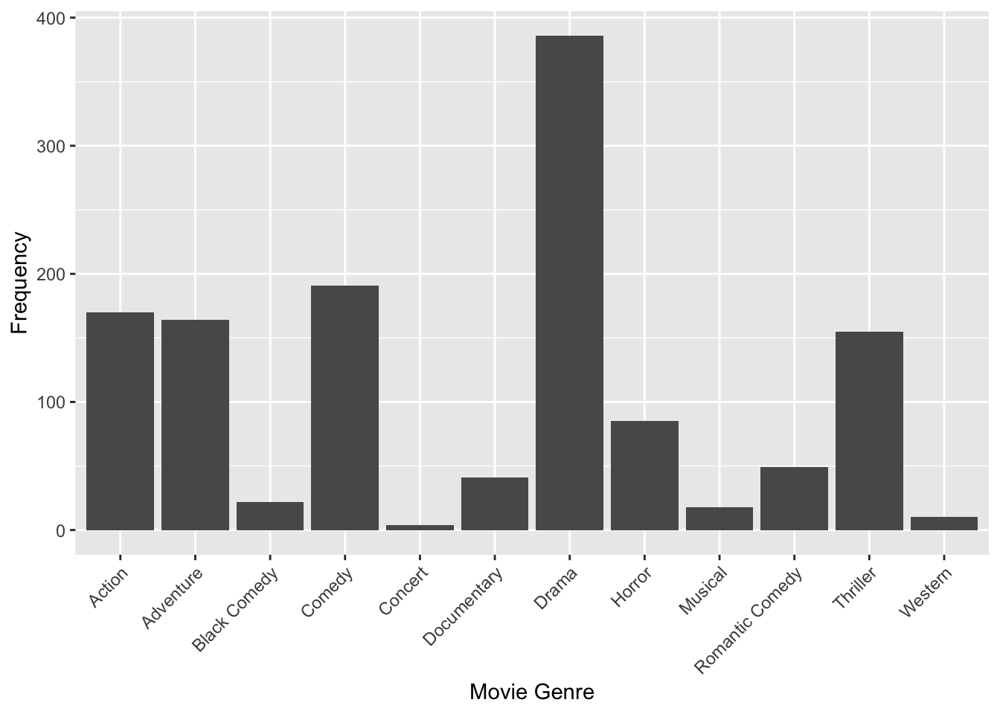
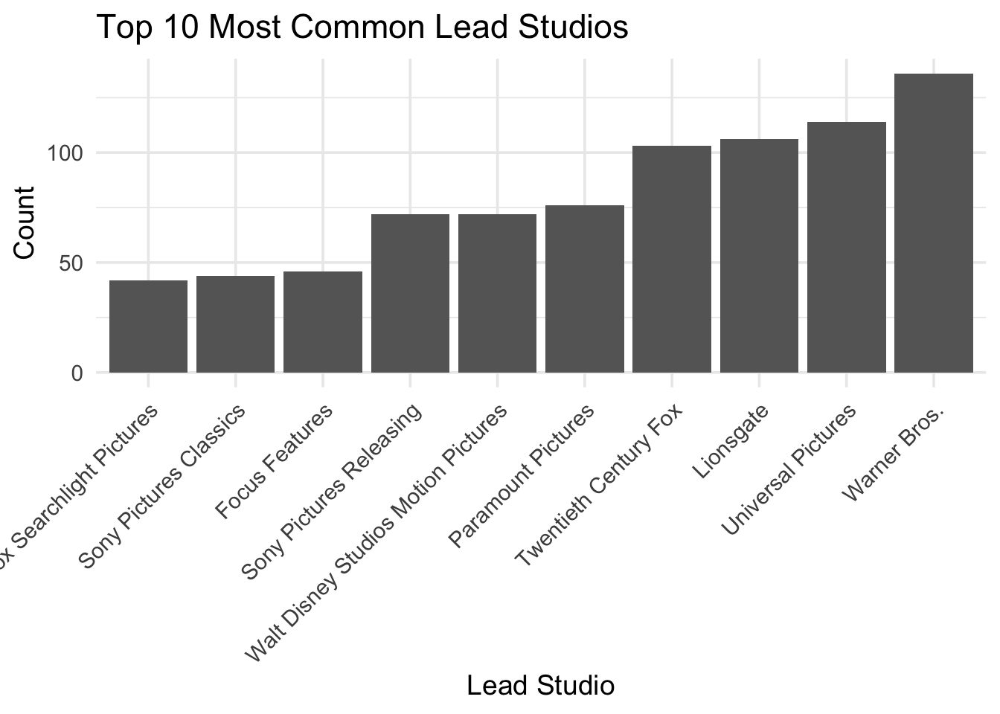
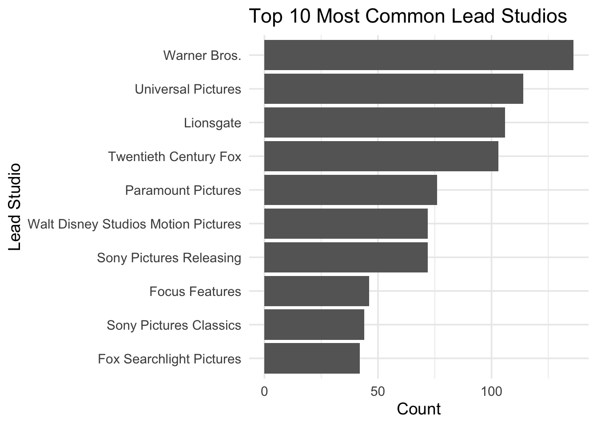
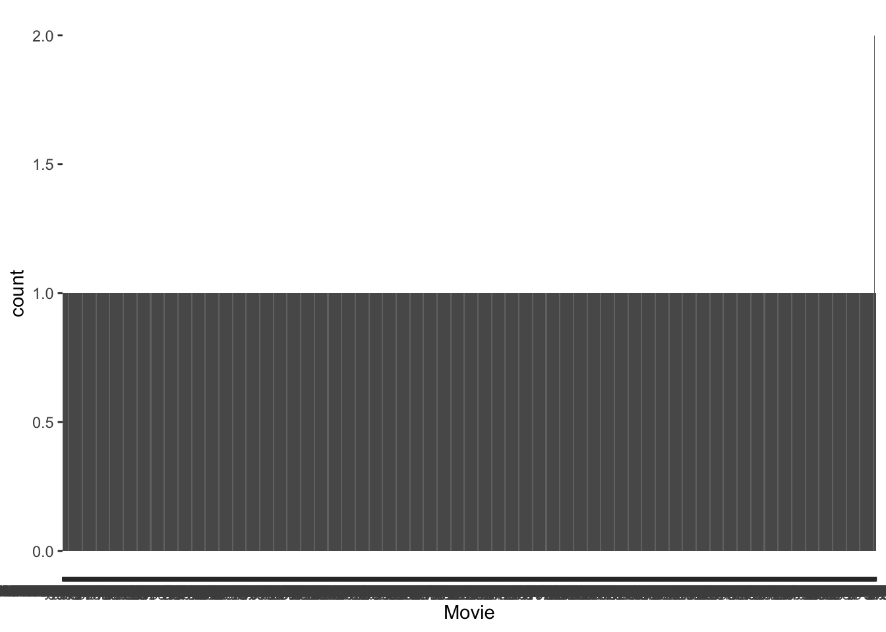

| Variable Name | Description |
|---|---|
| Name | Name of the school |
| State | State where the school is located |
| ID | ID number for school |
| Main | Main campus? (1 = yes, 0 = branch campus) |
| Accred | Accreditation agency |
| MainDegree | Predominant undergrad degree (0 = not classified, 1 = certificate, 2 = associate, 3 = bachelors, 4 = only graduate) |
| HighDegree | Highest degree (0 = no degrees, 1 = certificate, 2 = associate, 3 = bachelors, 4 = graduate) |
| Control | Control of school (Private, Profit, Public) |
| Region | Region of country (Midwest, Northeast, Southeast, Territory, West) |
| Locale | Locale (City, Rural, Suburb, Town) |
| Latitude | Latitude |
| Longitude | Longitude |
| AdmitRate | Admission rate |
| MidACT | Median of ACT scores |
| AvgSAT | Average combined SAT scores |
| Online | Only online (distance) programmes |
| Enrollment | Undergraduate enrolment |
| White | Percent of undergraduates who report being white |
| Black | Percent of undergraduates who report being black |
| Hispanic | Percent of undergraduates who report being Hispanic |
| Asian | Percent of undergraduates who report being Asian |
| Other | Percent of undergraduates who do not report one of the above |
| PartTime | Percent of undergraduates who are part-time students |
| NetPrice | Average net price (cost minus aid) |
| Cost | Average total cost for tuition, room, board, etc. |
| TuitionIn | In-state tuition and fees |
| TuitionOut | Out-of-state tuition and fees |
| TuitionFTE | Net tuition revenue per FTE student |
| InstructFTE | Instructional spending per FTE student |
| FacSalary | Average monthly salary for full-time faculty |
| FullTimeFac | Percent of faculty who are full-time |
| Pell | Percent of students receiving Pell grants |
| CompRate | Completion rate (percent who finish programme within 150% of normal time) |
| Debt | Average debt for students who complete the programme |
| Female | Percent of female students |
| FirstGen | Percent of first-generation students |
| MedIncome | Median family income (in $1,000) |
Categorical Data – MSDA IFP
Week 09 – Tutorial 02
1. Tasks For formative report
This week’s task is highlighted in bold below. Please only focus on completing that task this week. In the next section, you will also find guided sub-steps you may want to consider to complete this week’s task.
- Read the College dataset into R, inspect it, and write a concise introduction to the data and its structure.
2) Display and describe the categorical variables.
- Display and describe a selection of numeric variables.
- Display and describe at least one relationship between two or three variables.
- Finish the report write-up, knit to PDF, and submit.
This tutorial is designed to help you complete Task 2.
1.1 Task 2 – sub-tasks
1.1 Task 2 – sub-tasks
Tip
Tip: Hover over the footnotes for hints showing useful R functions.
This week you will only focus on Task 2: Display and describe the categorical variables.
Below there are some guided sub-steps you may want to consider to complete Task 2.
- Reopen last week’s
.qmdfile, as you will continue last week’s work and build on it.1
Read the CollegeScores dataset into R (from the provided CSV file in
datasets/) and give the object a sensible name (for examplecollege).2Use functions such as
glimpse()orstr()to check the structure of the dataset and identify which variables are categorical (e.g.State,Control,Region,Locale,Main,Online).3Convert these categorical variables to factors in R so that they are treated correctly in plots and summaries.4
Create bar plots showing the frequency distribution of at least three categorical variables
(for example: number of institutions byRegion, byControl, and byLocale).5Improve the readability of your bar plots by:
- rotating x-axis labels if the names are long
- ordering categories by frequency using
fct_infreq()where appropriate
- adding clear axis labels and an informative title with
labs().6
- rotating x-axis labels if the names are long
For the same categorical variables, create frequency tables showing both the count and the percentage of institutions in each category.7
Format your frequency tables neatly using
kbl()from the kableExtra package, so they are ready to include in your report.8In your written Analysis section, describe the distributions in words. For example:
- Which categories are most common?
- Are some categories rare?
- Is the distribution fairly balanced or dominated by one or two groups?
- Which categories are most common?
For each categorical variable in your report, include either the bar plot or the frequency table (not both) to avoid duplicating information.
You do not need to include R output in the report; you only need the written description. Keep this paragraph; you will re-use it in your report.
Data
CollegeScores Dataset
You will work with the CollegeScores dataset in this tutorial.
At the link CollegeScores_teaching.csv you will find information about 400 higher-education institutions in the United States.
The dataset includes variables describing each institution’s location, sector (public/private), tuition costs, enrolment, and the demographic composition of their student body.
2 Worked Example
Consider the dataset provided in datasets/HollywoodMovies.csv, containing 1295 observations on the following 15 variables:
| Variable Name | Description |
|---|---|
| Movie | Title of the movie |
| LeadStudio | Primary U.S. distributor |
| RottenTomatoes | Critics' rating (Rotten Tomatoes) |
| AudienceScore | Audience rating (Rotten Tomatoes) |
| Genre | Film genre (e.g., Action Adventure, Comedy, Thriller) |
| TheatersOpenWeek | Number of screens on opening weekend |
| OpeningWeekend | Opening weekend gross (in millions) |
| BOAvgOpenWeekend | Average box office income per theatre, opening weekend |
| Budget | Production budget (in millions) |
| DomesticGross | U.S. gross income (in millions) |
| ForeignGross | Foreign gross income (in millions) |
| WorldGross | Worldwide gross income (in millions) |
| Profitability | Worldwide gross as a percentage of budget |
| OpenProfit | Percentage of budget recovered on opening weekend |
| Year | Year of release |
These data were compiled from Box Office Mojo, The Numbers, and Rotten Tomatoes.
We load the tidyverse package as we will use the functions
read_csv() and glimpse() from this package.
Load tidyverse and import the data
library(tidyverse)read_csv() reads CSV (comma-separated values) files.
The loaded data are stored in an object called movies using the arrow <-.
movies <- read_csv("HollywoodMovies.csv")movies <- movies |>
select(1:15)
glimpse(movies)Rows: 1,295
Columns: 15
$ Movie <chr> "2016: Obama's America", "21 Jump Street", "A Late Qu…
$ LeadStudio <chr> "Rocky Mountain Pictures", "Sony Pictures Releasing",…
$ RottenTomatoes <dbl> 26, 85, 76, 90, 35, 27, 91, 56, 11, 44, 93, 63, 87, 9…
$ AudienceScore <dbl> 73, 82, 71, 82, 51, 72, 62, 47, 47, 63, 82, 51, 63, 9…
$ Genre <chr> "Documentary", "Comedy", "Drama", "Drama", "Horror", …
$ TheatersOpenWeek <dbl> 1, 3121, 9, 7, 3108, 3039, 132, 245, 2539, 3192, 3, 1…
$ OpeningWeekend <dbl> 0.03, 36.30, 0.08, 0.04, 16.31, 24.48, 1.14, 0.70, 11…
$ BOAvgOpenWeekend <dbl> 30000, 11631, 8889, 5714, 5248, 8055, 8636, 2857, 449…
$ Budget <dbl> 3.0, 42.0, NA, NA, 68.0, 12.0, NA, 7.5, 35.0, 50.0, 1…
$ DomesticGross <dbl> 33.35, 138.45, 1.56, 1.55, 37.52, 70.01, 1.99, 3.01, …
$ WorldGross <dbl> 33.35, 202.81, 6.30, 7.60, 137.49, 82.50, 3.59, 8.54,…
$ ForeignGross <dbl> 0.00, 64.36, 4.74, 6.05, 99.97, 12.49, 1.60, 5.53, 9.…
$ Profitability <dbl> 1334.00, 482.88, NA, NA, 202.19, 687.50, NA, 113.87, …
$ OpenProfit <dbl> 1.20, 86.43, NA, NA, 23.99, 204.00, NA, 9.33, 32.57, …
$ Year <dbl> 2012, 2012, 2012, 2012, 2012, 2012, 2012, 2012, 2012,…3.1 Visualising categorical variables
| Variable | Why categorical? |
|---|---|
| Movie | Unique labels (ID variable) |
| LeadStudio | Qualitative categories |
| Genre | Qualitative categories |
| Year | Distinct categories, not continuous numeric data |
You will create bar plots for:
GenreLeadStudioYear
Bar plots are the standard way to display categorical frequencies.
Genre frequency plot
plot_genre <- ggplot(movies, aes(x = Genre)) +
geom_bar() +
labs(x = "Movie Genre", y = "Frequency") +
theme(axis.text.x = element_text(angle = 45, vjust = 1, hjust = 1))
plot_genre
LeadStudio frequency plot
library(tidyverse)
library(forcats)
plot_LeadStudio <- ggplot(movies, aes(x = fct_infreq(LeadStudio))) +
geom_bar() +
labs(
x = "Lead Studio (sorted by frequency)",
y = "Count",
title = "Frequency of Lead Studios"
) +
scale_y_continuous(
breaks = seq(0, 150, by = 20) # More detailed count axis
) +
theme_minimal() +
theme(
axis.text.x = element_text(
angle = 45,
hjust = 1,
size = 6, # Smaller labels so they fit
lineheight = 0.8
),
plot.title = element_text(size = 14, face = "bold"),
axis.text.y = element_text(size = 9)
)
plot_LeadStudio
Flip
ggplot(movies, aes(x = fct_infreq(LeadStudio))) +
geom_bar() +
coord_flip() +
labs(x = "Lead Studio (sorted by frequency)", y = "Count") +
theme_minimal() +
scale_y_continuous(breaks = seq(0, 150, by = 10))
Show only the top N studios (recommended)
Most analyses only need the most frequent studios.
library(tidyverse)
top_studios <- movies |>
count(LeadStudio) |>
arrange(desc(n)) |>
slice_head(n = 10) # top 10 studios
top_studios# A tibble: 10 × 2
LeadStudio n
<chr> <int>
1 Warner Bros. 136
2 Universal Pictures 114
3 Lionsgate 106
4 Twentieth Century Fox 103
5 Paramount Pictures 76
6 Sony Pictures Releasing 72
7 Walt Disney Studios Motion Pictures 72
8 Focus Features 46
9 Sony Pictures Classics 44
10 Fox Searchlight Pictures 42# Plot with readable labels
ggplot(top_studios, aes(x = fct_reorder(LeadStudio, n), y = n)) +
geom_col(fill = "grey40") +
labs(
x = "Lead Studio",
y = "Count",
title = "Top 10 Most Common Lead Studios"
) +
theme_minimal(base_size = 14) +
theme(
axis.text.x = element_text(
angle = 45,
hjust = 1,
vjust = 1
)
)
slice(1:10)limits the graph to the top 10 studios → readable.fct_reorder()orders bars by frequency.angle = 45rotates labels so they don’t overlap.base_size = 14makes everything easier to read.
If you want horizontal bars (even cleaner for long labels), use:
ggplot(top_studios, aes(x = n, y = fct_reorder(LeadStudio, n))) +
geom_col(fill = "grey40") +
labs(
x = "Count",
y = "Lead Studio",
title = "Top 10 Most Common Lead Studios"
) +
theme_minimal(base_size = 14)
This horizontal version is often the best for categorical names.
Thinking question: Should we plot Movie Titles?
ggplot(movies, aes(x = Movie)) + geom_bar()
Would plotting movie titles give any useful insight?
-Movie is an identifier variable: each title appears only once. -A bar plot of titles would have hundreds of bars of height 1, which is very hard to read and does not summarise the data. -In reports, we usually do not visualise ID variables; instead, we focus on variables that group observations into meaningful categories (such as Genre or LeadStudio).
Year frequency plot
ggplot(movies, aes(x = factor(Year))) +
geom_bar() +
labs(
x = "Year of Release",
y = "Frequency",
title = "Number of Movies Released per Year"
) +
theme_minimal() +
theme(
axis.text.x = element_text(
angle = 45,
hjust = 1
)
)
3.2 Frequency tables with percentages
Genre frequency table
library(tidyverse)
library(kableExtra)
Attaching package: 'kableExtra'The following object is masked from 'package:dplyr':
group_rows# Genre frequency table
tbl_genre <- movies |>
count(Genre, name = "n") |>
mutate(
Percent = round((n / sum(n)) * 100, digits = 2)
) |>
arrange(desc(n))
tbl_genre# A tibble: 12 × 3
Genre n Percent
<chr> <int> <dbl>
1 Drama 386 29.8
2 Comedy 191 14.8
3 Action 170 13.1
4 Adventure 164 12.7
5 Thriller 155 12.0
6 Horror 85 6.56
7 Romantic Comedy 49 3.78
8 Documentary 41 3.17
9 Black Comedy 22 1.7
10 Musical 18 1.39
11 Western 10 0.77
12 Concert 4 0.31LeadStudio frequency table
# LeadStudio frequency table
tbl_studio <- movies |>
count(LeadStudio, name = "n") |>
mutate(
Percent = round((n / sum(n)) * 100, digits = 2)
) |>
arrange(desc(n))
tbl_studio# A tibble: 99 × 3
LeadStudio n Percent
<chr> <int> <dbl>
1 Warner Bros. 136 10.5
2 Universal Pictures 114 8.8
3 Lionsgate 106 8.19
4 Twentieth Century Fox 103 7.95
5 Paramount Pictures 76 5.87
6 Sony Pictures Releasing 72 5.56
7 Walt Disney Studios Motion Pictures 72 5.56
8 Focus Features 46 3.55
9 Sony Pictures Classics 44 3.4
10 Fox Searchlight Pictures 42 3.24
# ℹ 89 more rowstbl_studio_top10 <- tbl_studio |>
slice(1:10)Formatting tables nicely
kbl(
list(
tbl_genre,
tbl_studio_top10
),
booktabs = TRUE,
digits = 2,
col.names = c("Category", "Count", "Percent")
)
|
|
If you prefer separate tables with captions you can reference in the text:
# Genre table
tbl_genre |>
kbl(
booktabs = TRUE,
digits = 2,
caption = "Frequency distribution of movie genres",
col.names = c("Genre", "Count", "Percent")
)| Genre | Count | Percent |
|---|---|---|
| Drama | 386 | 29.81 |
| Comedy | 191 | 14.75 |
| Action | 170 | 13.13 |
| Adventure | 164 | 12.66 |
| Thriller | 155 | 11.97 |
| Horror | 85 | 6.56 |
| Romantic Comedy | 49 | 3.78 |
| Documentary | 41 | 3.17 |
| Black Comedy | 22 | 1.70 |
| Musical | 18 | 1.39 |
| Western | 10 | 0.77 |
| Concert | 4 | 0.31 |
# Lead studio table (top 10)
tbl_studio_top10 |>
kbl(
booktabs = TRUE,
digits = 2,
caption = "Top 10 most common lead studios",
col.names = c("Lead Studio", "Count", "Percent")
)| Lead Studio | Count | Percent |
|---|---|---|
| Warner Bros. | 136 | 10.50 |
| Universal Pictures | 114 | 8.80 |
| Lionsgate | 106 | 8.19 |
| Twentieth Century Fox | 103 | 7.95 |
| Paramount Pictures | 76 | 5.87 |
| Sony Pictures Releasing | 72 | 5.56 |
| Walt Disney Studios Motion Pictures | 72 | 5.56 |
| Focus Features | 46 | 3.55 |
| Sony Pictures Classics | 44 | 3.40 |
| Fox Searchlight Pictures | 42 | 3.24 |
Then in your .qmd text you can reference them like:
Table \@ref(tab:genre-table) shows the frequency and percentage of each film genre.
Table \@ref(tab:studio-table) summarises the ten most common lead studios.(using the corresponding chunk labels, e.g. {r genre-table} and {r studio-table} for the chunks that create each kbl).
What is the most common category?
Most common genre = category with the highest frequency
Most common lead studio = category with the highest frequency
You can identify this from the sorted tables or by using slice_max():
slice_max(tbl_genre, n, n = 1)# A tibble: 1 × 3
Genre n Percent
<chr> <int> <dbl>
1 Drama 386 29.8slice_max(tbl_studio, n, n = 1)# A tibble: 1 × 3
LeadStudio n Percent
<chr> <int> <dbl>
1 Warner Bros. 136 10.5Footnotes
Hint: Open the same
.qmdfile you used for Task 1 so you keep building a single report.↩︎Hint: Use
read_csv("datasets/CollegeScores_teaching.csv")from the readr package.↩︎Hint: Try
glimpse(college)from dplyr orstr(college).↩︎Hint: Use
mutate()withfactor(), for example
college <- college |> mutate(Control = factor(Control), Region = factor(Region)).↩︎Hint: Use
ggplot(college, aes(x = Control)) + geom_bar().↩︎Hint:
theme(axis.text.x = element_text(angle = 45, hjust = 1))andfct_infreq()from forcats.↩︎Hint:
college |> count(Control) |> mutate(Percent = round(n / sum(n) * 100, 2)).↩︎Hint:
kbl(your_table, booktabs = TRUE, digits = 2).↩︎